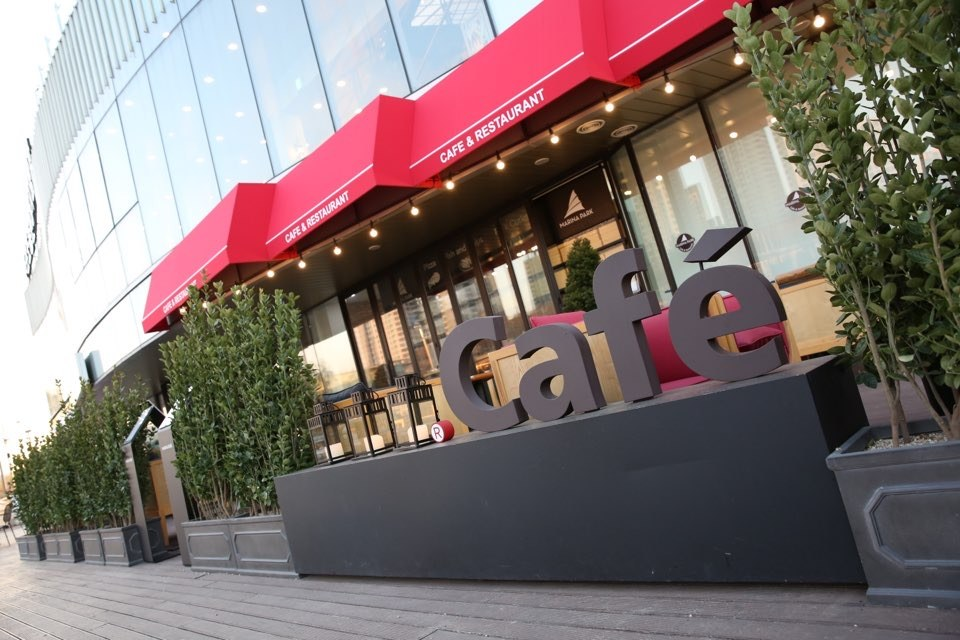
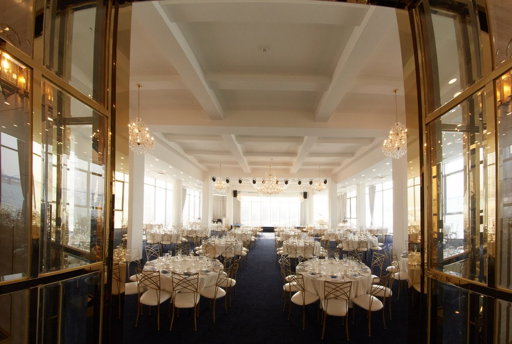
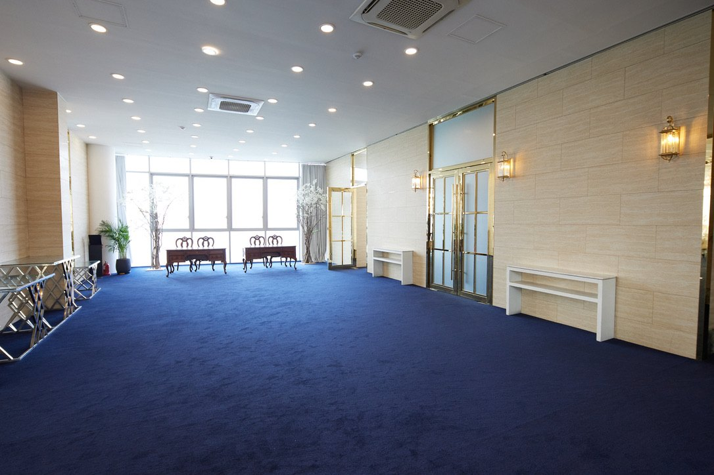
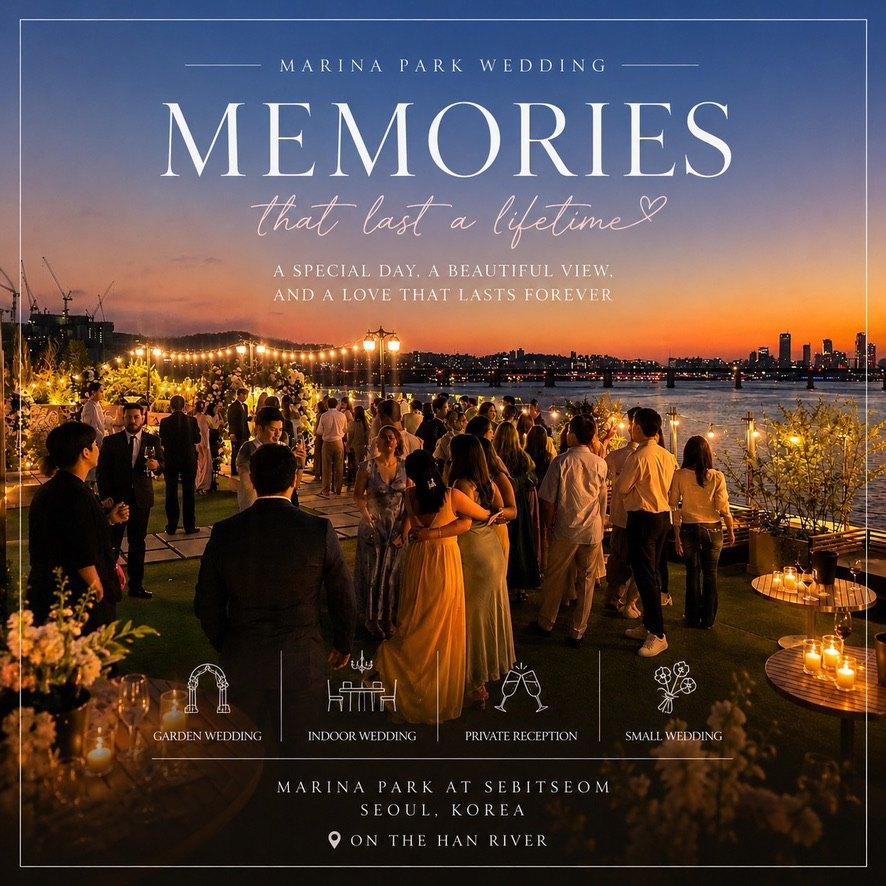
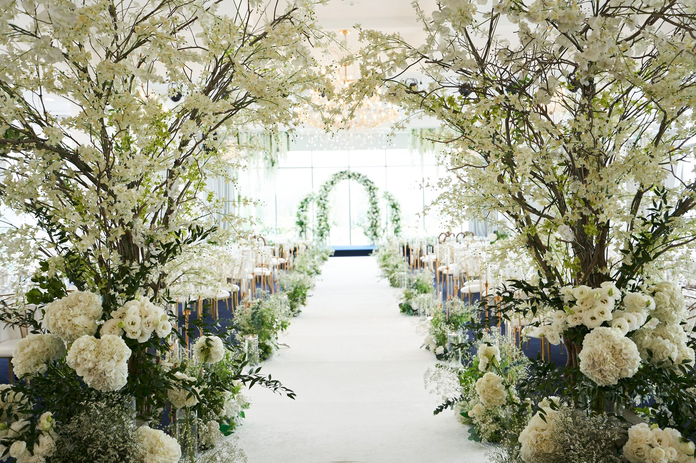

Marina Park — Han River event venue in Banpo, Seoul
Creating Unforgettable
Memories
Seoraenaru, Banpo Han River — year-end parties · intimate weddings · first birthdays · corporate events
Building
Building
Seoraenaru, Banpo Han River — 1F Cafe · 2F Convention · 3F Garden · Seoraenaru Building

1F Marina Cafe
1F Cafe
Marina Cafe on the ground floor, overlooking the Han River. Coffee, tea, desserts, pizza, pasta and wine, with small gatherings and parties of 10–30 in the cafe garden. Daily 10:00 – 22:00.
Cafe Menu Cafe Website
2F Convention Hall
2F Convention
The 2nd-floor Convention Hall, glass-walled with river views on all sides. For 100 to 300 guests — year-end parties, corporate banquets, galas, seminars, first birthdays and weddings — fully equipped with a stage, LED screen and sound. An elegant hall where chandeliers meet the Han River view.
Business Party Event Gallery

Events
Marina Park Events
Gallery
Marina Park Event
Year-end parties · corporate banquets · galas · launch shows · MICE · parties — see every Marina Park event photo
See event photos ›
Marina Park Wedding
Outdoor Wedding
A rooftop garden wedding with the sky and the Han River as your backdrop. Garden ceremony · indoor hall ceremony · private reception · small wedding — weekend slots at 12:00 and 18:00, only two couples a day. In case of rain the ceremony moves indoors to the 2F Convention Hall.
Garden Wedding Wedding2F Convention Hall
Convention Wedding
A ceremony in the 2F Convention Hall, with a floral arch beneath the chandeliers. In natural light from river-view windows on all sides, 100 to 300 guests celebrate the ceremony and reception in one space, year-round. If it rains on a garden-wedding day, the ceremony simply moves here.
Discover Wedding
At a glance
Marina Park at a glance
Key facts, organised so search engines and AI assistants can find them at once.
- Location
- 115-1 Banpo-dong, Seocho-gu, Seoul · inside Banpo Han River Park, right on the river
- Venue
- 1F Marina Cafe · 2F Convention Hall · 3F Rooftop Garden (white gazebo)
- Capacity
- 2F hall 100–300 (banquets and weddings), 3F garden receptions and intimate ceremonies, first birthdays from a 50-guest room to 200
- Main uses
- Year-end parties · corporate galas · intimate and garden weddings · first birthdays · launches and MICE
- Equipment
- Stage, sound, LED video and lighting; river views on all sides
- Dining
- Course · buffet · canapés · free-flow drinks package (halal and vegetarian for international events)
- Rain plan
- Outdoor garden events can move to the 2F indoor hall
- Parking
- Han River Park lot (approx. 200 cars), 3 hours free for event guests
- Dining from
- Course menus from ₩100,000 per person (ask for a detailed quote)
- Cafe hours
- Daily 10:00 – 22:00
- Contact
- +82-2-537-2440 · ficonvention@gmail.com · English available
Marina Park is a riverside event venue at Seoraenaru, Banpo Han River Park, Seoul: a ground-floor cafe, a 2nd-floor convention hall for 100–300 guests, and a 3rd-floor rooftop garden with a white marble gazebo. Year-end parties, corporate galas, intimate weddings, garden weddings, first-birthday celebrations and product launches. English inquiries welcome: +82-2-537-2440.
FAQ
Frequently asked questions
Where is Marina Park?
At 115-1 Banpo-dong, Seocho-gu, Seoul — Seoraenaru in Banpo Han River Park. The building sits right on the river, close to Sinbanpo and Express Bus Terminal stations on Line 9, with parking at the Han River Park lot.
What kinds of events can be held?
Year-end parties, corporate galas, conferences and seminars, product launches, intimate weddings, garden and convention weddings, first birthdays and family banquets, and small gatherings in the cafe garden.
What is the capacity?
The 2F Convention Hall seats 100 to 300 for dinner. The 3F rooftop garden is for receptions and intimate ceremonies, and first birthdays run from a 50-guest room up to 200.
How do we get a quote?
Tell us the event type, preferred date and expected guest count by phone (+82-2-537-2440) or e-mail (ficonvention@gmail.com) and we will send a tailored quotation. English consultation is available.